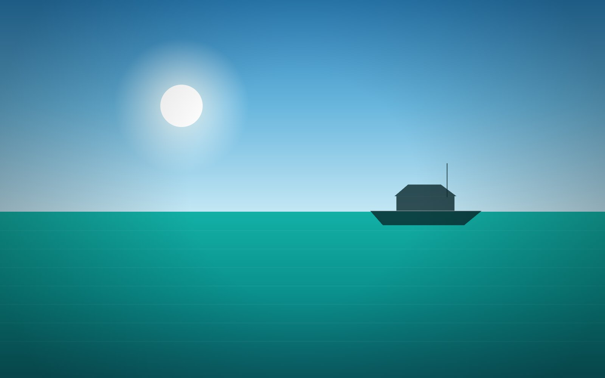
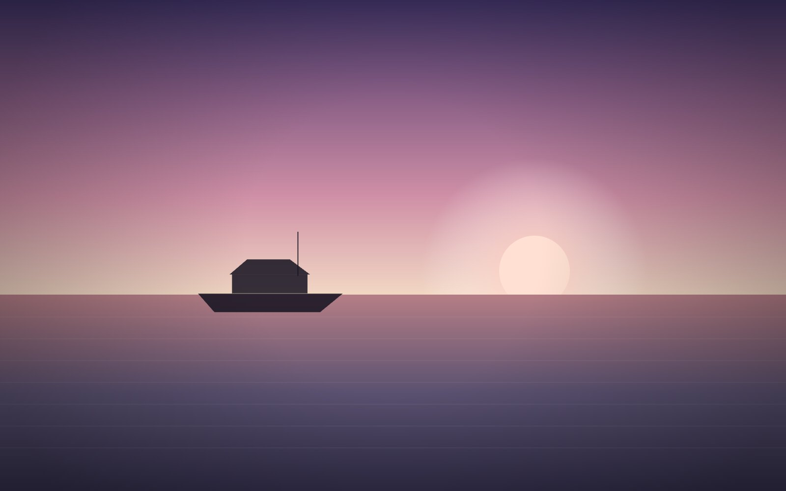

The most romantic sunset in Marbella
Champagne and a horizon on fire
On this private sunset boat trip Marbella couples and small groups love, we leave Puerto Banús in the late afternoon to sail the bay of Marbella as the sun sinks into the Mediterranean. Fruit platter, cheese and charcuterie board, drinks on board and the most beautiful light of the day.
Perfect for anniversaries, a special date or simply toasting a good moment. 100% private, just for your group.
Skipper, fuel and light catering on board.
2 hours at sunset. Extendable to 4h with anchoring and a swim.
Couples, anniversaries and small groups looking for magic.
Romantic decoration, extended catering or a photographer on board.


Free cancellation 24h before · We confirm in under 2h
A private sunset boat trip in Marbella, just for your group
There is no better way to end a day on the Costa del Sol than a sunset boat trip in Marbella. As the afternoon softens, we cast off from Puerto Banús aboard the De Antonio D50 and glide out into calm water while the sky turns gold, then pink, then deep amber over the sea. It is unhurried, intimate and completely private.
Unlike a crowded group cruise, this is your own yacht for the evening. You set the mood and decide whether to keep moving along the coast or drop anchor and watch the light change. From €1,200 for 2 hours, with skipper and fuel included, it is one of the most memorable things you can do on the water in Marbella.
What the sunset trip includes
Everything is arranged so you can step aboard and relax. Your two hours on the water come with:
- A professional skipper who knows the coastline and handles the boat throughout.
- Fuel included in the price, with no surprises at the dock.
- Light catering on board — a fresh fruit platter with a cheese and charcuterie board.
- Drinks, including a bottle of chilled cava or champagne to toast the sunset.
- Onboard gear such as towels, a Bluetooth sound system and a swim ladder if you fancy a dip.
Want more? Romantic decoration, an extended catering menu or a photographer on board can all be added when you book.
The route at golden hour
We leave the marina at Puerto Banús and ease into the bay of Marbella as the sun begins to drop. The route hugs the shore past the famous Golden Mile, with its landmark hotels, villas and beach clubs glowing in the low light. Along the way you often spot playful marine life close to the boat — if you love that, take a look at our dolphin watching trips in Marbella too.
As the horizon catches fire we can slow right down or drop anchor so you can enjoy the moment with a glass in hand. To combine the sunset with a swim, we pause in one of the calm bays nearby — our guide to the best coves to anchor near Marbella shows the spots we love most.
Who it's perfect for
The sunset trip suits any occasion that deserves a little magic. Couples come for the romance of it, and it is a favourite for anniversaries and special dates — if you are planning something even bigger, our yacht marriage proposal package turns the golden hour into an unforgettable yes. Small groups of friends and family love it too, raising a toast as the sun goes down with the whole boat to themselves.
Frequently asked questions
Departure is timed to the sunset, so it shifts through the season. We usually leave Puerto Banús around 90 minutes before sundown so you are on the water for the golden hour and the sky at its best. We confirm the exact time when you book.
The private sunset tour starts at €1,200 for 2 hours, with skipper and fuel included. Light catering and drinks are on board. You can extend to 4 hours with anchoring and a swim for an extra fee.
The De Antonio D50 carries up to 12 guests comfortably. It is 100% private, so whether you are a couple or a group of ten, the boat is yours alone for the trip.
Your safety and comfort come first. If the sea or wind make the trip unpleasant, we reschedule for another evening or offer a full refund. Cancellation is free up to 24 hours before departure.
Ready to sail into the Marbella sunset?
Secure your private evening on the water from €1,200. We confirm your booking in under 2 hours.
Book your sunset tour